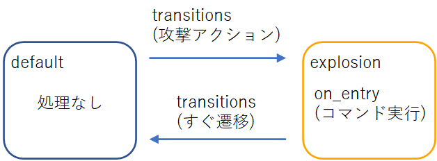

2022/10/27
◆マイクラ統合版のアドオンを作る目次◆
今回は、アニメーションコントローラ（以下アニコンと呼びます）という機能を使って、プレイヤーが攻撃したときにパーティクルを出現させるコマンドを実行します。
以下の手順で説明しています。
↓攻撃したときに周りにパーティクルが出現します。
ビヘイビアパックの中に、「animation_controllers」という名前のフォルダを作成します。
そのフォルダの中に、jsonファイルを作成します。
ファイル名は何でも良いのですが、とりあえずフォルダ名と同じ「animation_controllers.json」としておきます。
作成した「animation_controllers.json」を開いて、下記のテキストをコピペします。
{
"format_version" : "1.10.0",
"animation_controllers" : {
"controller.animation.attack" : {
"initial_state" : "default",
"states" : {
"default" : {
"transitions" : [
{
"attack" : "variable.attack_time"
}
]
},
"attack" : {
"on_entry": [
"/execute @s ~2 ~1 ~ /particle minecraft:sonic_explosion",
"/execute @s ~-2 ~1 ~ /particle minecraft:sonic_explosion",
"/execute @s ~ ~1 ~2 /particle minecraft:sonic_explosion",
"/execute @s ~ ~1 ~-2 /particle minecraft:sonic_explosion"
],
"transitions" : [
{
"default" : "(1.0)"
}
]
}
}
}
}
}
"controller.animation.attack"：
今回作るアニコンです。
"attack"の箇所は、好きな名前にして大丈夫です。
プレイヤーやモブにアニコンを紐づけるときに、ここの名前を使います。
"default"、"attack"：
この二つはstateと呼ばれるものです。
stateを作って処理を登録し、stateを変更していくことで各処理を実施する仕組みとなっています。
一度に複数のstateをとることはできません。

それぞれについて、以降で説明していきます。
stateとは、自分がいまとっている状態のことです。
最初は「default」状態にいます。
（"initial_state" : "default" で最初の状態を決めています。）
例えば、攻撃動作をしたらパーティクルを発生させるアニコンを作成するとします。
この場合、まず初めに「攻撃した」というstateを作ります。
そして、「パーティクル発生」という処理を追加します。
"attack" : {
"on_entry": [
"/execute @s ~2 ~1 ~ /particle minecraft:sonic_explosion",
"/execute @s ~-2 ~1 ~ /particle minecraft:sonic_explosion",
"/execute @s ~ ~1 ~2 /particle minecraft:sonic_explosion",
"/execute @s ~ ~1 ~-2 /particle minecraft:sonic_explosion"
],
これがstateとなります。
他にも「ジャンプした」「動いている」「アイテムを使った」など、大体の動作はstateとして作ることができます。
各stateでの処理の追加方法は下記の3通りあります。
上記の例ではon_entryを使っているので「attack stateに入ったら、4つのexecuteコマンドを一回実行する」という内容になっています。
/execute コマンドの詳細については、ここでは省略します。
stateを作ったら、stateを移動する条件を追加します。
この、移動する条件が「transitions」です。
default stateからattack stateへ遷移するには、default stateに以下のtransitionsを追加します。
"transitions" : [
{
"attack" : "variable.attack_time"
}
]
"variable.attack_time"は、攻撃動作を判定するものです。
「攻撃動作」を行ったら、attack stateへ遷移する、という意味になります。
この、動作を判定する記述は「Molang Queries」と呼ばれていて、下記に一覧があります。
Molang Queries | Bedrock Wiki
Technical bedrock knowledge-sharing wiki.
また、attack stateで処理を行ったらすぐdefault stateへ戻りたいので、以下のように記述します。
"transitions" : [
{
"default" : "(1.0)"
}
]
これは、無条件にdefault stateに遷移するという意味になります。
attack stateに入ってon_entryの処理を実施したら、すぐdefault stateに戻ります。
これで、攻撃したらattack stateに入ってon_entryの処理を実施し、すぐdefalut stateに入る、という動作を繰り返すことになります。
このようにして、stateと実行処理を作って、transitionsの条件で遷移させていくことでアニコンは動作します。
ちなみに、このようなstateを作って色々な処理を実施する手法はState Machineと呼ばれていて、規模の大きいプログラムではよく見かける方法です。
上記では、「攻撃アクションをしたときにパーティクルを発生させるコマンドを実行する」アニコンを作成しました。
これをentitiesのplayer.jsonに紐づけることで、プレイヤーが攻撃したときにパーティクルを発生させることができます。
player.jsonを以下のように変更します。
{
"format_version": "1.18.20",
"minecraft:entity": {
"description": {
"identifier": "minecraft:player",
"is_spawnable": false,
"is_summonable": false,
"is_experimental": false
"animations": {
"attack": "controller.animation.attack"
},
"scripts": {
"animate": [
"attack"
]
}
},
・・・
"animations"で、先ほど作成したアニコンを宣言します。
呼び出すための名づけ（attack）と、今回作成したアニコンの名前（controller.animation.attack）を記載します。
"scripts"で、使用するアニコンを紐づけます。
先ほどの「呼び出すための名づけ（attack）」をここで使用します。
これで、プレイヤーとアニコンの紐づけができました。
冒頭の動画のように、攻撃アクションをするとパーティクルが表示されるようになりました。
今回はプレイヤーにアニコンを紐づけましたが、もちろんentities内のjsonファイルを修正すれば、全てのmobで同様のことができます。
また、アニコンでの処理はコマンド実行でしたが、他にもentityのイベント発生や、compornents_groupのadd/removeなどにも使えるようです。
この辺りもいずれ記事にできたらと思います。
第2回と第3回で作成したaddonは下記にアップしてあります。
minecraft-addon/OnePunchBP
マインクラフト統合版のaddon置き場. Contribute to yamaccu/minecraft-addon development by creating an account on GitHub.
その４では、ゲーム内で使える新しいアイテムを作りたいと思います。
マインクラフトはアマゾンで購入できます。
最近、JAVA版と統合版がワンパッケージになったようで、購入すると両方プレイができます。
MineCraft Note Index
2022/10/30
アドオン作成に便利なVSCode拡張機能
2022/10/27
アドオン作成③ アニコンでコマンド実行
2022/10/24
アドオン作成② プレイヤー強化
2022/10/21
アドオン作成① 準備編
2022/10/5
3D CADデータのインポート
Sponsor